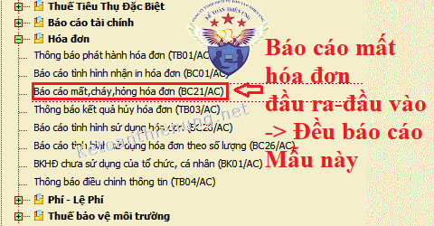
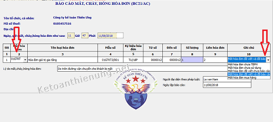
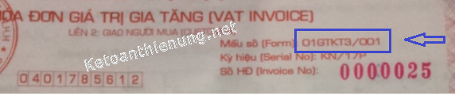
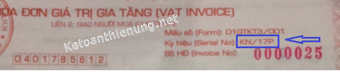
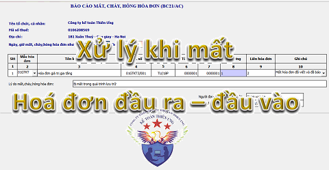

Cách xử lý khi mất hóa đơn GTGT (đỏ, VAT) chi tiết: Xử lý khi mất hóa đơn GTGT đầu vào (liên 2), xử lý mất hóa đơn đầu ra, cách làm báo cáo mất hóa đơn - Mức phạt mất hóa đơn ... theo quy định tại điều 24 Thông tư 39/2014/TT-BTC:
1. Cách xử lý khi mất hóa đơn GTGT đầu ra:
- Khi phát hiện việc mất, cháy, hỏng hóa đơn đầu ra (dù chưa lập hay đã lập):
Cách xử lý:
- Lập báo cáo mất hóa đơn gửi lên cơ quan thuế quản lý trực tiếp (trong vòng 5 ngày kể từ ngày xảy ra mất, cháy, hỏng)
+ Mẫu báo cáo mất, cháy, hỏng hóa đơn Mẫu số BC21/AC (Ban hành kèm theo Thông tư số 39/2014/TT-BTC).
Tải về tại đây: Mẫu báo cáo mất cháy hỏng hóa đơn
- Nếu nộp trực tiếp: Các bạn tải mẫu trên về, làm rồi nộp trực tiếp cho chi cục thuế (Chú ý: Phải liên hệ xem Chi cục thuế quản lý có nhận trực tiếp không -> Còn hiện tại hầu như sẽ nhận qua mạng nhé)
- Nếu nộp qua mạng: Các bạn đăng nhập vào phần mềm HTKK --> Hóa đơn -> Báo cáo mất, cháy, hỏng, hóa đơn (BC21/AC) -> Làm, sau đó nộp qua mạng.


Cách làm báo cáo mất hóa đơn trên phần mềm HTKK:
Cột số 1: Số thứ tự.
Cột số 2: Mẫu hóa đơn
- Các bạn bấm vào mũi tên để lựa chọn loại Mẫu hóa đơn muốn báo cáo mất.
VD: Bạn báo mất hóa đơn GTGT -> Chọn "01/GTKT"
Cột số 3: Tên loại hóa đơn
- Phần mềm sẽ tự động cập nhật
Cột số 4: Mẫu số
- Phần mềm sẽ tự động cập nhật -> Nhưng các bạn sẽ phải ghi thêm
VD: DN bạn báo cáo mất hóa đơn GTGT -> Cột 4 mẫu số sẽ tự cập nhật "01GTKT" -> Nhưng các bạn sẽ phải ghi thêm thành "01GTKT3/001" -> Mẫu này các bạn phải xem trên hóa đơn nhé.
VD: Bên bán báo cáo mất liên 2 -> Xem lại Mẫu số này trên liên 1 quyển hóa đơn
- Bên mua báo cáo mất hóa đơn đầu vào -> Sau khi bên bán sao y liên 1 -> Các bạn xem mẫu số trên liên 1 đó né.
Cột 5: Ký hiệu hóa đơn
- Các bạn xem ký hiệu trên hóa đơn như nào thì ghi vào nhé (Cách xác định giống như trên Cột 4 nhé)
Cột 6 và 7: Từ số đến số
VD:
- Mất 1 số hóa đơn là 0012các bạn ghi: Cột 6: 0012 - Cột số 7: 0012
- Nếu mất nhiều là liên tiếp thì các bạn ghi rõ từ số đến số.
- Nếu mất nhiều nhưng không liên tiếp: Thì các bạn phải thêm dòng (Bấm phím F5) sau đó làm tương như trường hợp 1 bên trên.
Cột số 8: Số lượng
- Phần mềm sẽ tự động cập nhật
Cột số 9: Liên hóa đơn
- Các bạn mất liên nào thì ghi vào đó
VD: Mất liên 1 ghi là 1, Mất liên 2 ghi là 2
- Mất liên 2;3 ghi là: 2;3
Cột số 10: Ghi chú
- Chú ý: Các bạn phải chọn đúng trường hợp này nhé (Vì các trường hợp khác nhau, mức phạt sẽ khác nhau) -> Chi tiết các mức phạt các bạn xem phần bên dưới nhé.
Cột lý do: Lý do mất là như nào, các bạn ghi vào đây nhé.
-> Sau khi làm xong các bạn kết xuất XML rồi nộp qua mạng (như nộp Tờ khai thuế GTGT nhé)
Cột số 1: Số thứ tự.
Cột số 2: Mẫu hóa đơn
- Các bạn bấm vào mũi tên để lựa chọn loại Mẫu hóa đơn muốn báo cáo mất.
VD: Bạn báo mất hóa đơn GTGT -> Chọn "01/GTKT"
Cột số 3: Tên loại hóa đơn
- Phần mềm sẽ tự động cập nhật
Cột số 4: Mẫu số
- Phần mềm sẽ tự động cập nhật -> Nhưng các bạn sẽ phải ghi thêm
VD: DN bạn báo cáo mất hóa đơn GTGT -> Cột 4 mẫu số sẽ tự cập nhật "01GTKT" -> Nhưng các bạn sẽ phải ghi thêm thành "01GTKT3/001" -> Mẫu này các bạn phải xem trên hóa đơn nhé.

VD: Bên bán báo cáo mất liên 2 -> Xem lại Mẫu số này trên liên 1 quyển hóa đơn
- Bên mua báo cáo mất hóa đơn đầu vào -> Sau khi bên bán sao y liên 1 -> Các bạn xem mẫu số trên liên 1 đó né.
Cột 5: Ký hiệu hóa đơn
- Các bạn xem ký hiệu trên hóa đơn như nào thì ghi vào nhé (Cách xác định giống như trên Cột 4 nhé)

Cột 6 và 7: Từ số đến số
VD:
- Mất 1 số hóa đơn là 0012các bạn ghi: Cột 6: 0012 - Cột số 7: 0012
- Nếu mất nhiều là liên tiếp thì các bạn ghi rõ từ số đến số.
- Nếu mất nhiều nhưng không liên tiếp: Thì các bạn phải thêm dòng (Bấm phím F5) sau đó làm tương như trường hợp 1 bên trên.
Cột số 8: Số lượng
- Phần mềm sẽ tự động cập nhật
Cột số 9: Liên hóa đơn
- Các bạn mất liên nào thì ghi vào đó
VD: Mất liên 1 ghi là 1, Mất liên 2 ghi là 2
- Mất liên 2;3 ghi là: 2;3
Cột số 10: Ghi chú
- Chú ý: Các bạn phải chọn đúng trường hợp này nhé (Vì các trường hợp khác nhau, mức phạt sẽ khác nhau) -> Chi tiết các mức phạt các bạn xem phần bên dưới nhé.
Cột lý do: Lý do mất là như nào, các bạn ghi vào đây nhé.
-> Sau khi làm xong các bạn kết xuất XML rồi nộp qua mạng (như nộp Tờ khai thuế GTGT nhé)
---------------------------------------------------------------
Mức phạt khi mất hoá đơn GTGT đầu ra:
Từ ngày 15/12/2016 Theo Thông tư 176/2016/TT-BTC: Mức phạt làm mất hóa đơn GTGT đầu ra sẽ từ 4.000.000 đồng đến 8.000.000. Cụ thể như sau:
- Làm mất, cháy, hỏng hoá đơn đã phát hành nhưng chưa lập hoặc hoá đơn đã lập (liên giao cho khách hàng) nhưng khách hàng chưa nhận được hoá đơn khi hoá đơn chưa đến thời gian lưu trữ hoặc hóa đơn đã lập theo bảng kê bán lẻ hàng hóa, dịch vụ; trừ trường hợp mất, cháy, hỏng hóa đơn do thiên tai, hỏa hoạn hoặc do sự kiện bất ngờ, sự kiện bất khả kháng khác thì không bị xử phạt tiền.
Trường hợp mất, cháy, hỏng hóa đơn đã lập (liên giao cho khách hàng), người bán và người mua lập biên bản ghi nhận sự việc, người bán đã kê khai, nộp thuế, có hợp đồng, chứng từ chứng minh việc mua bán hàng hóa, dịch vụ và có một tình tiết giảm nhẹ thì xử phạt ở mức tối thiểu của khung tiền phạt; nếu có từ hai tình tiết giảm nhẹ thì xử phạt cảnh cáo.
Trường hợp mất, cháy, hỏng hoá đơn, trừ liên giao cho khách hàng (tức là mất liên 1, liên 3 ....), trong thời gian lưu trữ thì xử phạt theo pháp luật về kế toán. (Phạt từ 5 - 10tr)
Trường hợp người bán tìm lại được hoá đơn đã mất (liên giao cho khách hàng) khi cơ quan thuế chưa ban hành quyết định xử phạt thì người bán không bị phạt tiền.
Trường hợp người bán làm mất, cháy, hỏng các liên hoá đơn đã lập sai và đã xoá bỏ (người bán đã lập hoá đơn khác thay thế cho các hoá đơn đã lập sai và đã xoá bỏ) thì người bán bị phạt cảnh cáo.
Trường hợp trong cùng một thời điểm, tổ chức, cá nhân thông báo mất nhiều số hoá đơn cho cơ quan thuế nhưng cơ quan thuế đủ căn cứ xác định tổ chức, cá nhân gộp nhiều lần mất hoá đơn để báo cáo cơ quan thuế thì xử phạt theo từng lần mất hoá đơn.
Trường hợp mất, cháy, hỏng hoá đơn đã lập (liên giao cho khách hàng) có liên quan đến bên thứ ba, bên thứ ba do người bán thuê thì xử phạt người bán theo quy định tại điểm này.
- Chi tiết: Mức phạt khi làm mất hóa đơn GTGT
Chú ý: Đây là mức phạt theo 1 lần làm báo cáo mất hóa đơn (1 lần làm báo cáo có thể mất nhiều hóa đơn). Nhưng nếu cơ quan thuế phát hiện ra việc bạn gộp nhiều lần lại để làm 1 lần báo cáo thì sẽ bị phạt theo từng lần làm mất.
- Nếu bị mất hóa đơn (Liên 2: giao khách hàng) mà bị cướp giật và có xác nhận của Công an thì sẽ không bị xử phạt. Chi tiết xem tại đây nhé: Mất hóa đơn bị cướp giật không xử phạt
------------------------------------------------------------------------------
2. Cách xử lý khi mất hóa đơn GTGT đầu vào (liên 2):
- Dù là người bán hay người mua làm mất, cháy, hỏng liên 2 thì:
Cách xử lý:
Bước 1: Hai bên lập biên bản ghi nhận sự việc:
- Trong biên bản phải ghi rõ liên 1 của người bán khai, nộp thuế trong tháng nào,
- Ký và ghi rõ họ tên của người đại diện theo pháp luật (hoặc người được ủy quyền),
- Đóng dấu trên biên bản.
- Mức phạt sẽ từ 4 - 8 triệu
Bước 2: Người bán sao chụp liên 1 của hóa đơn, ký xác nhận của người đại diện theo pháp luật và đóng dấu trên bản sao hóa đơn để giao cho người mua.
- Người mua được sử dụng hóa đơn bản sao có ký xác nhận, đóng dấu (nếu có) của người bán kèm theo biên bản về việc mất, cháy, hỏng liên 2 hóa đơn để làm chứng từ kế toán và kê khai thuế.
Bước 3: Lập báo cáo Mất cháy hỏng hóa đơn nộp cho cơ quan thuế
(- Bên nào làm mất thì bên đó làm Báo cáo này nhé -> Các bạn có thể làm trên phần mềm HTKK -> Vào phần hóa đơn -> Chọn: "Báo cáo mất, cháy, hỏng, hóa đơn (BC21/AC) -> Quy trình các bạn làm như trên phần 1 nhé.
------------------------------------------------------------------------------
Mức phạt mất hoá đơn GTGT đầu vào liên 2:
Từ ngày 15/12/2016 Theo Thông tư 176/2016/TT-BTC: Mức phạt làm mất hóa đơn GTGT đầu vào sẽ từ 4.000.000 đồng đến 8.000.000. Cụ thể như sau:
- Làm mất, cháy, hỏng hoá đơn đã lập (liên giao cho khách hàng) để hạch toán kế toán, kê khai thuế và thanh toán vốn ngân sách; trừ trường hợp mất, cháy, hỏng hóa đơn do thiên tai, hỏa hoạn hoặc do sự kiện bất ngờ, sự kiện bất khả kháng khác thì không bị xử phạt tiền.
Trường hợp mất, cháy, hỏng hóa đơn đã lập (liên giao cho khách hàng), người bán và người mua lập biên bản ghi nhận sự việc, người bán đã kê khai, nộp thuế, có hợp đồng, chứng từ chứng minh việc mua bán hàng hóa, dịch vụ và có một tình tiết giảm nhẹ thì xử phạt ở mức tối thiểu của khung tiền phạt; nếu có từ hai tình tiết giảm nhẹ thì xử phạt cảnh cáo.
Trường hợp người mua tìm lại được hoá đơn đã mất và báo cáo lại với cơ quan thuế trước khi cơ quan thuế ban hành quyết định xử phạt thì người mua không bị phạt tiền.
Trường hợp trong cùng một thời điểm, tổ chức, cá nhân thông báo mất nhiều số hoá đơn cho cơ quan thuế nhưng cơ quan thuế đủ căn cứ xác định tổ chức, cá nhân gộp nhiều lần mất hoá đơn để báo cáo cơ quan thuế thì xử phạt theo từng lần mất hoá đơn.
Trường hợp mất, cháy, hỏng hoá đơn đã lập (liên giao cho khách hàng) có liên quan đến bên thứ ba, bên thứ ba do người mua thuê thì xử phạt người mua theo quy định tại khoản này.
Trường hợp mất, cháy, hỏng hoá đơn đã lập (liên giao cho khách hàng) trong thời gian lưu trữ thì xử phạt theo pháp luật về kế toán.”
3. Trường hợp mất, cháy, hỏng hoá đơn liên 2 đã sử dụng có liên quan đến bên thứ ba:
Ví dụ: Bên thứ ba là bên vận chuyển hàng hoặc bên chuyển hoá đơn, thì căn cứ vào việc bên thứ ba do bên nào thuê để xác định trách nhiệm và xử phạt.
VD cụ thể: Người bán thuê bên thứ 3 vận chuyển hàng kèm theo hóa đơn, nhưng bên thứ 3 làm mất. Thì người bán phải chịu trách nhiệm và bị xử phạt.
-----------------------------------------------------------------
Chúc các bạn thành công! Các bạn muốn học cách kê khai thuế, lập báo cáo quyết toán thuế có thể tham gia: Khóa học thực hành kế toán thuế thực tế
__________________________________________________
